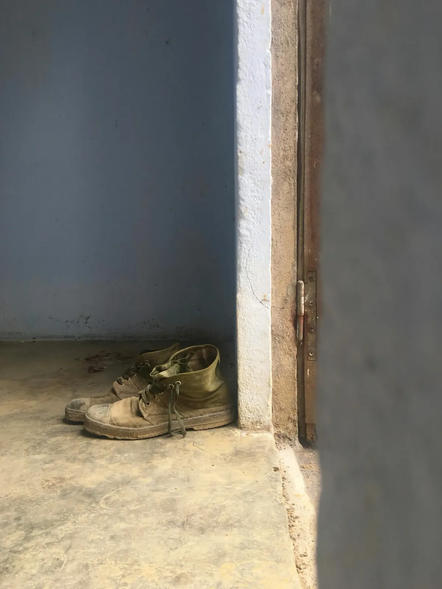
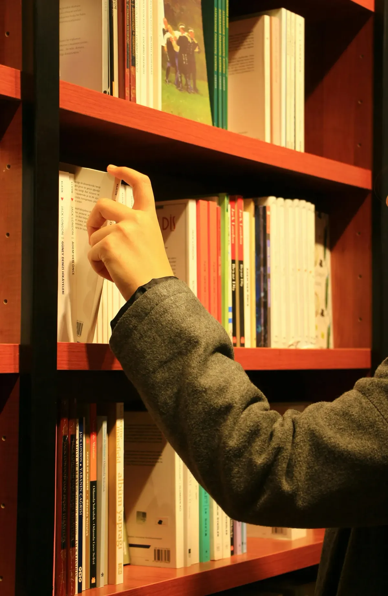

בניית זהות ועצמאות
מהחיפוש החוצה אל חיבור פנימי שממנו נבנים זהות, עצמאות וחופש בחירה
משבר רבע החיים: טיפול במבוגרים צעירים
בשנות העשרים והשלושים אנו ניצבים מול הציפייה לבנות את חיינו במגוון היבטים במקביל: לצאת לעצמאות, לגבש זהות, להתבסס מקצועית וכלכלית, לבנות זוגיות, ולעצב מחדש את הקשר עם המשפחה. בנקודת זמן רגישה זו, מסגרות חיצוניות כמו צבא או לימודים מסתיימות והאחריות עוברת אלינו. מעבר זה מלווה לעיתים קרובות בתחושות של בלבול, חוסר כיוון או תקיעות, ובמחשבות כמו "מה אני אמור.ה לעשות עכשיו?", לצד אשמה או חרדה על כך שאנחנו ״לא עומדים בקצב״.
קל מאוד לפרש את החוויה הזו כבעיה אישית – כאילו משהו בנו לא מספיק מגובש, החלטי או בשל – אך בפועל מדובר בתגובה אנושית ומובנת לשלב חיים כה מורכב. כאשר היציבות החיצונית מתחלפת במרחב פתוח של בחירה, טבעי ובלתי-נמנע שיעלו בו גם אי-ודאות, ספק ושאלות. החוויה הזו אינה ״מכשול״ שצריך לסלק; אלא ביטוי לכך שמשהו בתוכנו מבקש לעצור, לבחון את הקיים ולהיבנות בצורה מדויקת ואותנטית יותר.
הטיפול הוא מרחב בטוח שמאפשר להאט את הקצב ולהתבונן בחוויה הזו מבפנים. דרך מיינדפולנס, ניתן לזהות את הקולות הפנימיים שמנהלים אותנו – ביקורת, פחד, צורך לרצות או להוכיח – ולהבין כיצד הם משפיעים על הבחירות שלנו. התהליך אינו מכוון לספק ״תשובות נכונות״, אלא לפתח סמכות פנימית שמאפשרת הקשבה, בחירה ותנועה מתוך חיבור עצמי. כך, בהדרגה, תחושת הבלבול מפנה מקום לתחושת כיוון - כזה שאינו מבוסס על ודאות מוחלטת, אלא על היכולת לסמוך על עצמנו מתוך יציבות שמתבהרת מבפנים.
השוואה חברתית ו-FOMO: כשנדמה שכולם מסתדרים חוץ ממני
אנחנו חיים בעידן של ״חלונות ראווה״ דיגיטליים. בכל גלילה בפיד אנחנו נחשפים לרגעי השיא של אחרים: הטיול המושלם, התואר הנחשק, הזוגיות הפוטוגנית או הקריירה מעוררת הקנאה. במקביל, הסערה הפנימית, הלבטים, חוסר הוודאות, והתחושות הלא פתורות נשארים מחוץ לפריים. הפער הזה, במיוחד בשנים שבהן הזהות עדיין בתהליכי גיבוש, יכול לעורר תחושת FOMO (פחד מהחמצה) ואמונה שקטה אך כואבת ש״כולם מתקדמים ורק אני נשאר.ת מאחור״. התחושות האלו לא תמיד נאמרות בקול, אך מכרסמות מבפנים כמתח מתמשך וספקות עצמיים לגבי הדרך שלנו.
עם הזמן, ההשוואה החברתית הופכת ממבט רגעי לדפוס תודעתי שמארגן את החוויה שלנו: תחושה מתמדת של פער בין ״איפה אני״ לבין ״איפה הייתי אמור.ה להיות״. כך נוצר ניתוק בין החוויה הפנימית לבין מה שנראה כלפי חוץ, וקשה להבחין מה באמת נכון לנו בתוך כל רעשי הרקע. בטיפול, אנו לומדים לעצור את ההשוואה האוטומטית ולהפנות את תשומת הלב פנימה. מתוך כך מתאפשר המעבר מהכוונה חיצונית אל חיבור פנימי לקול האותנטי שלנו.

ממסגרת לבחירה: גיוס, שחרור ומה שביניהם
המעבר ממסגרת בית הספר למסגרת הצבאית מלווה לרוב בחששות טבעיים: המרחק מהבית, מהחברים, ומהסביבה המוכרת, והכניסה אל עולם חדש, היררכי ומשמעתי, שבו הכללים משתנים בבת אחת. עבור רבים, מדובר בקשיי הסתגלות שחולפים עם הזמן. אך עבור חלקנו השירות הצבאי מייצר טלטלה עמוקה יותר: תחושת זרות, בדידות או פער בין מי שחשבנו שנהיה לבין מה שקורה בפועל. קשיי התאמה למסגרת אינם מעידים על חולשה; אלא לעיתים משקפים נפש שמתקשה להידחק לתבנית קשיחה, וחווה מצוקה מול אובדן הקול האישי. במצבים אלו, טיפול רגשי יכול להוות מענה לעיבוד חוויות השירות – מהשגרה השוחקת ועד לאירועים מטלטלים – ולחזק את היכולת להישאר מחוברים לעצמנו גם בתוך מציאות תובענית.
אולם האתגר אינו מסתיים ביום השחרור. המעבר החד בין מסגרת ברורה אל חופש בחירה עשוי להציף בלבול, ריקנות וחוסר כיוון. חלקנו אורזים תרמיל ויוצאים לטיול הגדול, אחרים נשארים קרוב לבית - כך או כך עולה השאלה המתבקשת ״מה עכשיו?״. ״החיים האמיתיים״ כבר כאן, אך אינם מגיעים עם הוראות הפעלה.
בשלב זה צפות שאלות עמוקות של זהות, שייכות ועצמאות, ולעיתים גם קושי לסמוך על עצמנו בתוך ריבוי האפשרויות. הטיפול מייצר מרחב שבו ניתן לעבד את המעברים האלו בקצב אישי ובאופן מותאם. דרכו מתאפשר מעבר הדרגתי מחוויה של הישרדות בתוך השינוי, ליכולת להחזיק את עצמנו גם בתוך חוסר ודאות, ולבנות תחושת יציבות פנימית שאינה תלויה רק במסגרת חיצונית, אלא נשענת על חיבור עמוק יותר לעצמנו.

בין הרצון לבחור לפחד לטעות: המלכוד של גילאי העשרים והשלושים
שנות העשרים מביאות איתן דרישה חברתית חריפה: לבחור מסלול, להתחייב ללימודים או לקריירה, ולהגדיר את עצמנו דרך העיסוק שלנו. בתוך עולם שמקדש יעילות, הבחירה הזו נתפסת לא פעם כהחלטה גורלית שתקבע את כל עתידנו. עבור רבים, תפיסה זו מייצרת חרדה המתבטאת בקושי לבחור עקב פרפקציוניזם ודחיינות בקבלת החלטות, או לחילופין לבחירה שנובעת מציפיות חברתיות ומשפחתיות, ולא מתוך חיבור אמיתי לנטיות הלב.
המפגש עם האקדמיה או העבודה מביא איתו אתגרים נוספים: הצורך בניהול עצמי, התמודדות עם עומס ולחץ, אחריות הולכת וגוברת וספק עצמי מול ההתקדמות של אחרים. לעיתים קרובות נוצר פער בין הציפייה ל"חוויה סטודנטיאלית" או מימוש מקצועי לבין מציאות שבה אנו מנסים לעמוד בדרישות ומחויבויות, תוך כדי שאנחנו מאבדים קשר עם עצמנו. כאשר הערך העצמי מתחיל להישען על ציונים והישגים, החיבור הפנימי מתרופף עוד יותר, ועלולה להופיע תסמונת המתחזה, שבה גם הצלחות מוכחות לא מוטמעות כתחושת מסוגלות פנימית.
בטיפול, אנו מתבוננים בבחירות הללו לא כמבחן גורלי, אלא כחלק מתהליך של גיבוש זהות. אנו מורידים את מפלס החרדה סביב ״הבחירה הנכונה״, ולומדים להבחין בין הצורך באישור חיצוני לבין הסמכות הפנימית שלנו. כך הלימודים והעבודה הופכים מהזדמנות להוכחת ערך, למרחב של גילוי עצמי. דרך הקשבה עדינה בשיטת האקומי, מתגלים רבדים עמוקים של החוויה הפנימית, ומתוכם מתבהר כיוון שמחובר למי שאת.ה באמת, ולא רק למי שציפו ממך להיות.
עצמאות ונפרדות: בין קרבה לגבולות
המעבר מבית ההורים לחיים עצמאיים אינו רק מעבר דירה פיזי, אלא תהליך נפשי עמוק של נפרדות, שבו היחסים עם ההורים עוברים הגדרה מחדש. בשלב הזה אנו פוגשים את המתח בין הכמיהה להישאר מוגנים ועטופים, לבין הדחף העז לצאת לעולם ולעמוד בזכות עצמנו. סביב מתח זה צפות סוגיות של הצבת גבולות, ולעיתים עולה תחושת אשמה על בחירה בדרך שונה מזו שציפו מאיתנו, או פחד שהעצמאות שלנו תתפרש כריחוק או כפגיעה בקשר.
התהליך הטיפולי מאפשר לנו להתבונן בהנחות היסוד שהפנמנו בילדות, ולשאול מה מתוכן באמת שייך לנו ומה שייך להורים. דרך הבנת דפוסי ההתקשרות שלנו, ניתן לזהות כיצד הם ממשיכים לעצב את הבחירות, הפחדים ומערכות היחסים שלנו בהווה. מתוך מודעות זו, מתאפשר מעבר הדרגתי מתלות לסמכות פנימית, שבמהלכו אנו לומדים להעריך את השורשים שלנו מבלי להיבלע בתוכם. כך נפתחת דרך חדשה של קרבה מתוך נפרדות, שמאפשרת לפתח יחסים בוגרים ומאוזנים עם ההורים, תוך שמירה על הגבולות האישיים שלנו ועל הזכות לבחור בדרך משלנו.
מחיפוש החוצה אל הקשבה פנימה
בניית זהות ועצמאות אינה תהליך לינארי של הגעה ליעד, אלא תנועה מתמשכת בין חוץ לפנים - בין מסגרות ברורות, ציפיות חברתיות ומסלולים מוכרים, לבין רגעים שבהם הקרקע מתרופפת ואנחנו פוגשים את עצמנו מחדש ללא הגדרה חיצונית יציבה. כל אחד מהמרחבים שתוארו כאן – השוואה חברתית, מעברים בין מסגרות, בחירות מקצועיות, יציאה לעצמאות והיחסים עם ההורים – מציף בדרכו את אותה שאלה עדינה: ״מה באמת נכון לי, כשאני מפסיק.ה להתאים את עצמי החוצה?״
כדי לצמצם את חוסר הוודאות מפתה להישען על קולות חיצוניים: להשוות, למהר לבחור, או לנסות לעמוד בציפיות של אחרים. בנקודה זו הטיפול אינו מבקש לתת תשובה אחת, אלא לאפשר תנועה של התבהרות – כזו שאינה מוותרת על השתלבות בעולם הקיים, אלא לומדת להתמקם בו מתוך הקשבה פנימית עמוקה. דרך פסיכותרפיה דינמית, מתאפשר תהליך הדרגתי של מעבר מהישענות על ה'בחוץ' להעמקת הקשר עם ה'בפנים': זיהוי הקולות המניעים אותנו, חיזוק הסמכות הפנימית, ופיתוח יכולת לשאת מורכבות מבלי לאבד כיוון. כך נבנית בהדרגה יציבות זהותית חדשה, שאינה מבוססת על ודאות, אלא על קשר חי עם עצמך, ומתוך קשר זה נולדת דרך שהיא באמת שלך.
אדם לא יכול לגלות אוקיינוסים חדשים
אם אין לו את האומץ לאבד את קו החוף
— אנדרה ז׳יד

למצוא את הדרך חזרה לעצמך
הטיפול סביב סוגיות של בניית זהות ועצמאות הוא הזמנה להפוך את המפגש בקליניקה למרחב של חקירה עדינה של הדפוסים הלא מודעים המעצבים את בחירות החיים שלך. עבודתי כפסיכותרפיסט מבוססת על הכשרה בתכנית הארבע-שנתית לפסיכותרפיה במכון האקומי, ועל ניסיון קליני במרכז הרפואי 'לב השרון' ובקליניקה פרטית בפרדס חנה.
יחד ניצור מרחב בטוח שבו נוכל לזהות את הקולות החיצוניים שמנהלים אותך, ולהבחין בינם לבין הרצונות והצרכים האותנטיים שלך. השילוב בין התנסות חווייתית לבין הבנה פסיכולוגית מעמיקה מאפשר לבסס סמכות פנימית יציבה שאינה תלויה רק בציפיות חיצוניות או במסגרות מוכרות, ולמצוא מחדש חיבור עצמי שממנו אפשר לבחור ולנוע קדימה.
אם את.ה מרגיש.ה בלבול מול ריבוי האפשרויות, או שיש בתוכך קריאה לבירור וגיבוש של תחושת כיוון - אשמח ללוות אותך בתהליך.